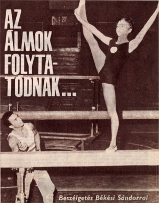

Ilona Bekesi (HUN)
1972 Olympic Team Bronze Medalist

|
Medal Total Olympic Games: 1 Bronze |
Ilona was born on December 11, 1953 in Budapest, and trained at Vasas Sports Club. The best Hungarian female gymnast of the early 1970s, Ilona competed in two Olympic Games (1968 and 1972) and won a bronze medal with her team in Munich. Her father, Sandor, was also a gymnast who competed at the 1958 world championships and 1960 Olympic Games.
Competition Results
1965
Budapest Team Championships (girls' division): 3rd AA
Hungarian Youth Championships: 4th AA, 2nd FX, 3rd UB, 3rd B
Pioneer Summer Olympics: 1st AA
1966
Pioneer Summer Olympics: 1st AA
1967
Budapest Jr. Championships: 1st AA, 1st V 1st UB, 1st FX
Hungarian Masters: 6th AA
Jr. ROM-HUN Dual Meet: 1st Team, 1st AA
Pioneer Summer Olympics: 1st AA, 1st UB, 1st FX
1968
Hungarian Youth Championships: 1st AA, 1st V, 1st UB, 1st FX
Leipzig-Budapest Dual Meet: 2nd Team, 4th AA
NED-HUN Dual Meet: 1st Team, 5th AA, 2nd FX
Olympic Games: 5th Team
, 38th AA
URS-HUN Dual Meet: 2nd Team, 10th AA
1969
Hungarian High School Championships: 1st AA, 1st V, 1st UB, 1st B, 1st FX
1970
Budapest Championships: 1st AA
HUN-ROM Dual Meet: 1st Team, 3rd AA
Hungarian Championships: 3rd AA
Hungarian High School Championships: 1st AA, 1st V, 1st UB, 1st B, 1st FX
Leningrad-Budapest Dual Meet: 1st Team, 2nd AA
Matolay Memorial Tournament: 1st AA, 1st V, 1st UB, 1st FX, 2nd B
NED-HUN Dual Meet: 1st Team, 2nd AA
World Championships: 6th Team, 22nd AA
1971
CSSR-HUN Dual Meet: 1st Team, 1st AA
EUR-JPN Dual Meet: 1st Team, 1st AA
European Championships: 4th AA, 4th UB, 5th B, 5th FX, 6th V
Hungarian Championships: 1st AA
Hungarian International: 1st AA, 1st V, 1st UB, 1st B, 2nd FX
Riga International: 4th FX
ROM-HUN Dual Meet: 2nd AA
1972
Chunichi Cup: 5th AA
HUN-ROM Dual Meet: 1st Team, 1st AA
Hungarian Championships: 1st AA
ITA-HUN Dual Meet: 1st Team, 3rd AA
Olympic Games: 3rd Team, 9th AA, 5th UB
NED-HUN Dual Meet: 1st Team, 1st AA
Tokyo Cup: 4th AA
1973
Paris Grand Prix: 1st AA
University Games: 3rd Team, 6th AA, 5th FX
USA-HUN Dual Meet: 1st Team, 1st AA
This page was created on March 23, 2020 and was last updated on February 15, 2021.
© Gymn Forum